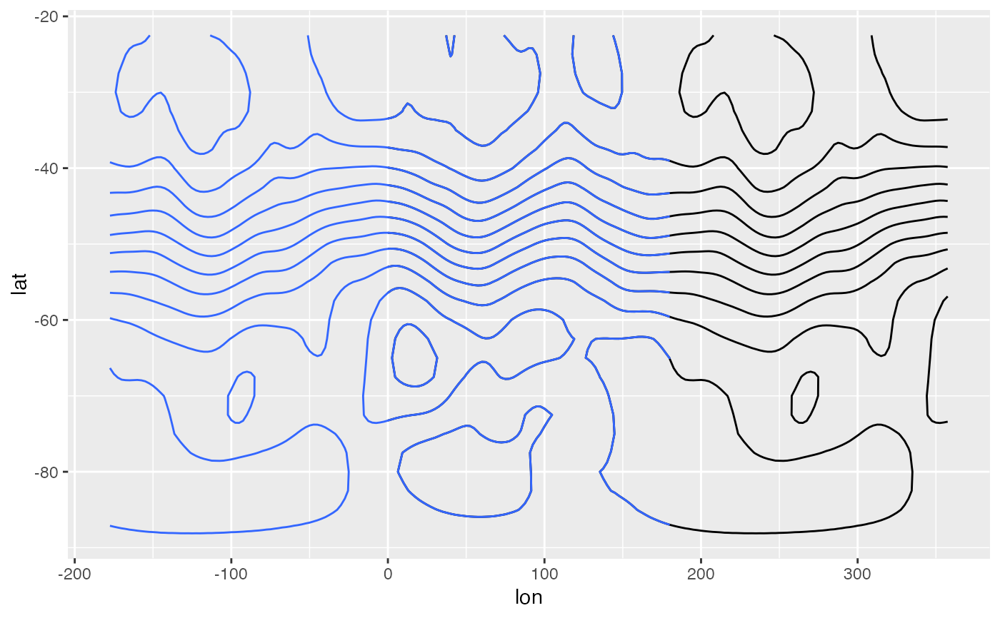
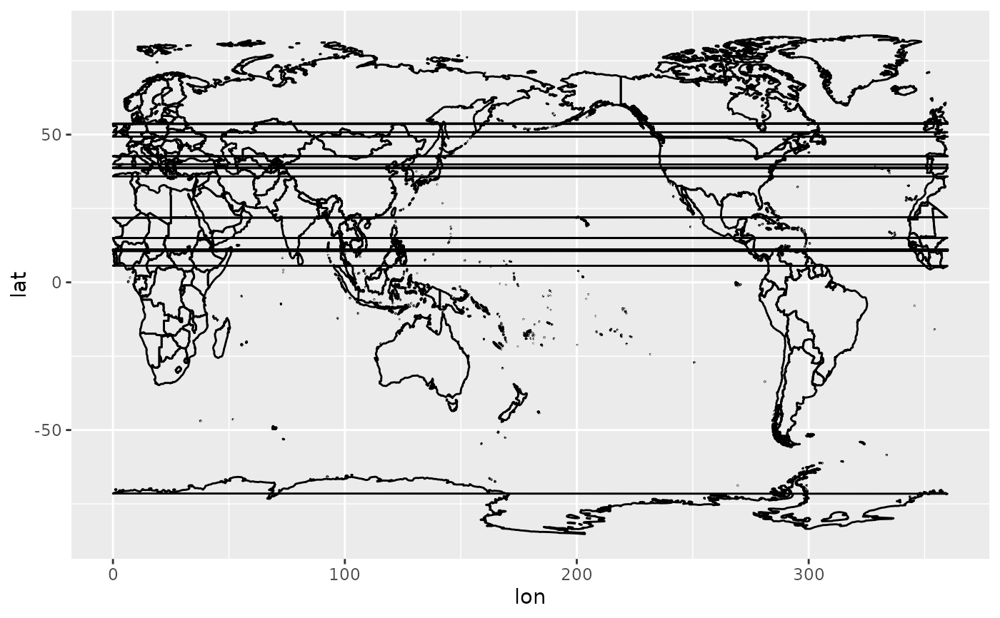

Converts longitude from [0, 360) to [-180, 180) and vice versa.
ConvertLongitude(lon, group = NULL, from = NULL)If group is missing, a numeric vector the same length of lon.
Else, a list with vectors lon and group.
library(ggplot2)
library(data.table)
data(geopotential)
ggplot(geopotential[date == date[1]], aes(lon, lat, z = gh)) +
geom_contour(color = "black") +
geom_contour(aes(x = ConvertLongitude(lon)))

map <- setDT(map_data("world"))
map[, c("lon", "group2") := ConvertLongitude(long, group, from = 180)]
#> long lat group order region subregion lon group2
#> <num> <num> <num> <int> <char> <char> <num> <char>
#> 1: -69.89912 12.45200 1 1 Aruba <NA> 290.10088 1_2
#> 2: -69.89571 12.42300 1 2 Aruba <NA> 290.10429 1_2
#> 3: -69.94219 12.43853 1 3 Aruba <NA> 290.05781 1_2
#> 4: -70.00415 12.50049 1 4 Aruba <NA> 289.99585 1_2
#> 5: -70.06612 12.54697 1 5 Aruba <NA> 289.93388 1_2
#> ---
#> 99334: 12.43838 41.90620 1627 100960 Vatican enclave 12.43838 1627_2
#> 99335: 12.43057 41.90547 1627 100961 Vatican enclave 12.43057 1627_2
#> 99336: 12.42754 41.90073 1627 100962 Vatican enclave 12.42754 1627_2
#> 99337: 12.43057 41.89756 1627 100963 Vatican enclave 12.43057 1627_2
#> 99338: 12.43916 41.89839 1627 100964 Vatican enclave 12.43916 1627_2
ggplot(map, aes(lon, lat, group = group2)) +
geom_path()
